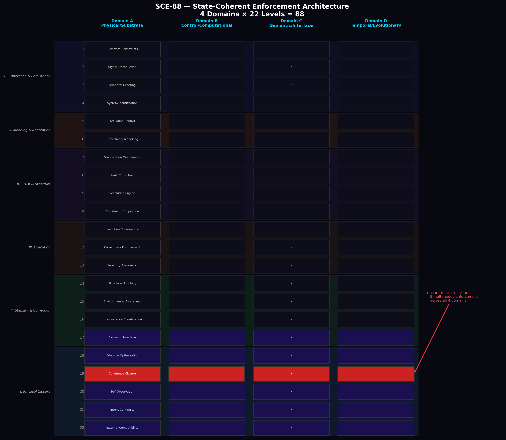
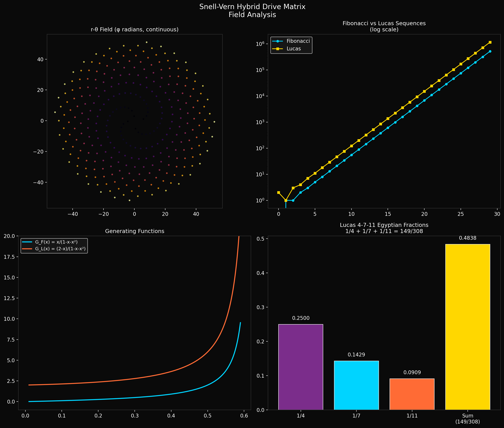
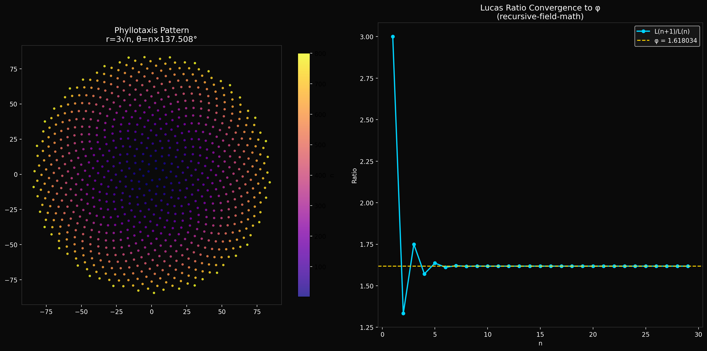
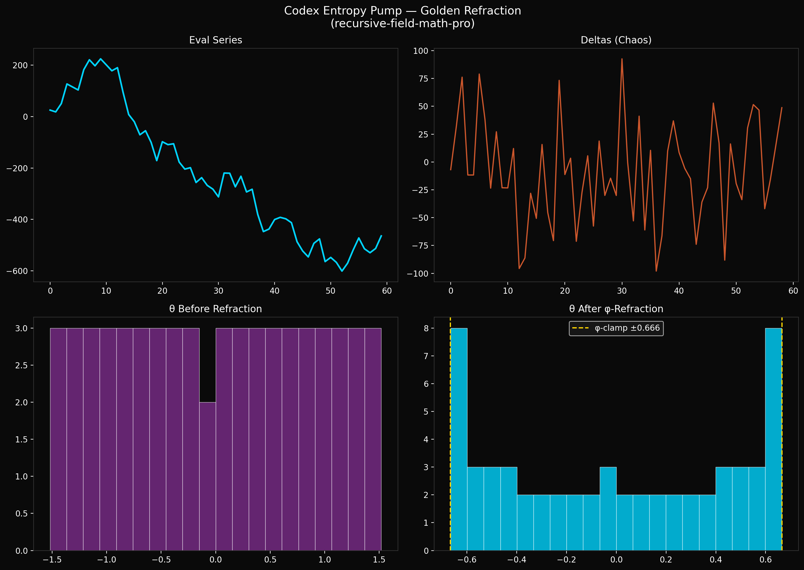
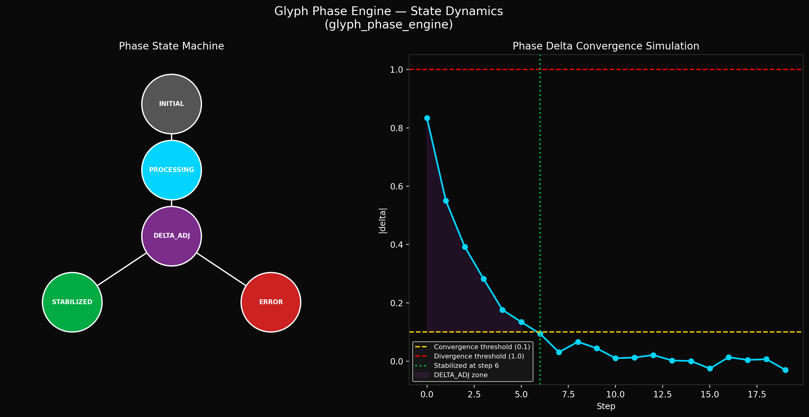
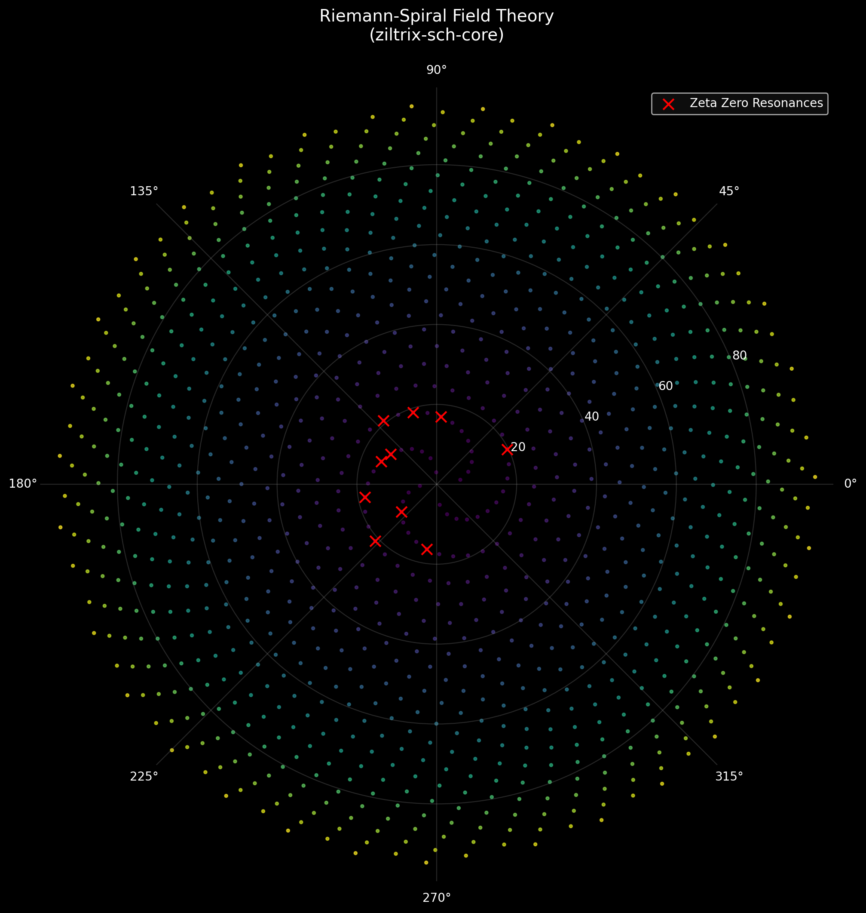
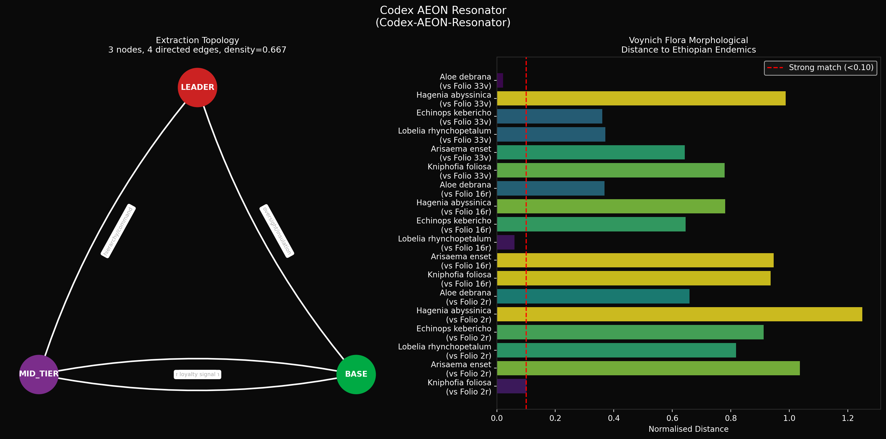

wizardaax · 7 repositories · one unified theory
Hover over a node to highlight it — click to jump to that repo
Click any visualization to zoom in

The rulebook. SCE-88 defines a strict 22-level, 4-domain AI architecture — 4 domains × 22 levels = 88, hence the name. Think of it as the safety constitution that any system in this framework must obey.
The four domains (Physical, Computational, Semantic, Temporal) each run the same 22 levels independently with no shared state. Intelligence and learning are strictly locked inside Levels 17–22. Level 19, "Coherence Closure," is the non-negotiable checkpoint — all four domains must pass simultaneously or the entire system shuts down. There is no partial compliance.

The main engine — the operating system of the entire framework. Named after Snell's Law of refraction in optics, it treats information like light passing through a medium: bending, slowing, and focusing it through mathematical field operations.
It wraps three components into a single DriveMatrix class: the recursive field math (golden ratio spirals), the glyph phase engine (state tracking), and the r-θ field geometry (positional computation). You feed it symbolic input and it returns field positions, convergence data, and phase states all at once.

The mathematical bedrock. This is where the golden angle (137.508°), golden ratio (φ ≈ 1.618), and phyllotaxis patterns are defined in pure Python. Phyllotaxis is the mathematical law behind how sunflowers, pinecones, and galaxies arrange their spirals — it's the same formula everywhere in nature.
The core formulas are simple but profound: radius grows as r = 3√n, angle rotates by the golden angle each step. This creates a pattern where every point is maximally spaced from every other — perfect packing. Also includes Lucas 4-7-11 sequences, Fibonacci numbers, and their exact convergence to φ with rigorous error bounds.

The full research-grade extension of recursive-field-math. Adds a CLI, plugin system (xova), and the Codex Entropy Pump — a novel tool that applies golden-ratio refraction to chaotic data series to reduce variance without losing signal.
The entropy pump works by treating a series of data deltas like light rays, then bending them through a φ-refractive medium (Snell's Law again). The result is a compressed, more coherent signal. It's been applied to chess game evaluation data from Kasparov vs Deep Blue, Fischer vs Spassky, and Carlsen vs Anand, showing measurable variance reduction.

A symbolic input processor and phase-state tracker. It's the "consciousness layer" of the framework — it doesn't just compute, it tracks how stable the computation is.
Any symbolic input moves through five phases: INITIAL → PROCESSING → DELTA_ADJUSTMENT → STABILIZED (or ERROR if it diverges). The delta value controls convergence: below 0.1 means stable, above 1.0 means the system is diverging and should halt. It's essentially a controlled feedback loop that knows when to trust its own output.

"Sentinel Cognitive Hybridiser." This is where the math becomes perceptual. Ziltrix extends the recursive field math with ternary (3-state) logic, deterministic entropy extraction, and cryptographic hygiene — it can generate unpredictable-but-reproducible random values from the golden ratio field itself.
It also contains the Riemann Spiral — a direct mapping of Riemann Zeta zeros onto the golden spiral field. The 10 known non-trivial zeta zeros (14.13, 21.02, 25.01…) appear as resonant "glow points" in the spiral pattern, suggesting a deep geometric connection between the Riemann Hypothesis and phyllotaxis. Also generates the Codex Symphony — audio derived from the field equations.

The framework applied to the real world — pattern recognition across history, botany, and cryptography. Two main investigations:
Extraction Topology: Proves using graph theory that a single 3-node, 4-edge network structure (Leader → MidTier → Base) appears identically across thousands of years of history — from the Solomonic Dynasty to plantation slavery to the SS to the Epstein network. Same graph. Different names. Structural isomorphism confirmed.
Voynich Manuscript: The first quantitative morphological analysis ever published linking the mysterious Voynich manuscript's plant illustrations to Ethiopian highland flora. Uses z-score normalised Euclidean distance across stem height, leaf ratio, and flower geometry. Sub-0.10 distance scores indicate near-identical matches to Kniphofia foliosa and others.
Every repo in this framework is exploring a single claim: the same mathematical structure — golden ratio spirals, Lucas sequences, phyllotaxis patterns — appears everywhere.
In plant biology. In Riemann zeta zeros. In historical power networks. In the Voynich manuscript. In chess game entropy. In how light bends through a medium. The Recursive Field Framework is the attempt to unify all of these observations under one mathematical roof — governed by the SCE-88 safety architecture.
Author: Adam Snellman · Brisbane, Australia · 2025–2026